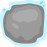
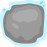

Kangaroo
انقر على الخانات لجلب القندس إلى العلم.
يمكنه الانتقال إلى خانة مجاورة ، إذا كانت مختلفًة عن خانته.
(له الحق أن ينتقل مرة واحدة إلى خانة مماثلة باستعمال الجوكر(ورقة رابحة .
لمساعدتك ، يمكنك الرسم على الشبكة
انقر على الخانات لجلب القندس إلى العلم.
يمكنه الانتقال إلى خانة مجاورة ، إذا كانت مختلفًة عن خانته.
(له الحق أن ينتقل مرة واحدة إلى خانة مماثلة باستعمال الجوكر(ورقة رابحة .
لمساعدتك ، يمكنك الرسم على الشبكة
 
